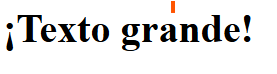
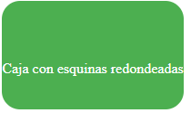
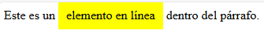
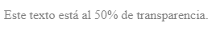
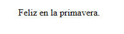
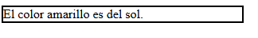
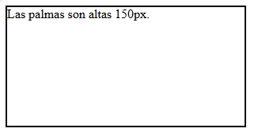
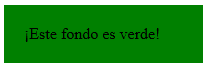

| Nombre de la etiqueta |
Descripcion |
Valores posibles |
Ejemplo de uso |
Imagen representativa |
Fuente de informacion |
| font-size |
Se usa para definir el tamaño del texto dentro de un elemento. |
px: 16px, em: 1.2em, rem: 1.5rem, %:120%, larger: larger. |
.{font-size:40px;} |
 |
clic aqui
|
| border-radius |
Se usa para redondear las esquinas de un elemento. Puedes aplicarla a cualquier elemento con bordes, como divs, imágenes, botones, etc. |
border-radius: 10px,border-radius: 50%, border-radius: 10px 20px 30px 40px,border-radius: 10px 20px. |
.{border-radius: 20px;} |
 |
clic aqui
|
| display |
controla cómo se muestra un elemento HTML en la página. Define si un elemento aparece como bloque, en línea, oculto, u otras formas más avanzadas como flexbox o grid. |
block, inline,inline-block, none,flex,grid,inline-flex,inline-grid. |
.{display: inline;} |
 |
clic aqui
|
| flexbox (display: flex;) |
Es un modelo de diseño en CSS que se usa para organizar, alinear y distribuir elementos dentro de un contenedor de forma flexible, incluso si su tamaño es dinámico o desconocido. |
flex, inline-flex,row, row-reverse, column, column-reverse,flex-start, flex-end, center, space-between, space-around,10px, 1rem.. |
.{display:felx; justify-content:space-between;} |
 |
clic aqui
|
| position |
Controla cómo se posiciona un elemento en la página web. Define si un elemento se coloca en el flujo normal del documento o si puede estar fijo, flotando o superpuesto. |
static (por defecto),relative,absolute,fixed,sticky. |
.{position: static;} |
 |
clic aqui
|
| box-shadow |
Se denominan sombras sobre cajas a las sombras en CSS que se pueden crear en una etiqueta o elemento HTML. Para ello, se utiliza la propiedad box-shadow, que funciona de forma muy similar a la que vimos en las sombras de texto. |
10px (derecha),-5px (arriba),15px (suave),5px (agrandar),rgba(0, 0, 0, 0.5) (negro semitransparente). |
.{box-shadow: 10px 10px 15px rgba(0, 0, 0, 0.5);} |
 |
clic aqui
|
| overflow |
Controla cómo se maneja el contenido desbordado (que excede el tamaño del contenedor). Es útil cuando el contenido es más grande que el área visible de un div, sección, u otro elemento HTML. |
visible,hidden,scroll,auto,clip. |
.{overflow: visible;} |
 |
clic aqui
|
| z-index |
Es una propiedad de CSS que se usa para establecer la visibilidad y el posicionamiento del contenido superpuesto. Cuando dos elementos se superponen, el z-index determina qué elemento aparece encima del otro. |
Valor positivo (+),Valor negativo (-),Por defecto (z-index: auto;). |
.{z-index:2;} |
 |
clic aqui
|
| opacity |
Controla el nivel de transparencia de un elemento. Permite hacer que un elemento sea más o menos visible, variando entre completamente opaco y totalmente transparente. |
1:Completamente visible (100% opaco),0: Totalmente transparente (invisible),0.5:50% de transparencia (semi-transparente). |
.{opacity: 0.5;} |
 |
clic aqui
|
| margin y padding |
En CSS, tanto el padding como el margin añaden espacio a los elementos de la web, pero cada uno aporta resultados diferentes. El padding es el espacio entre el contenido de un elemento y el borde. Por otra parte, el margin constituye el espacio más externo del elemento. |
.10px,20px, 30px, 40px. |
.{margin:10px 20px
padding: 15px;} |
 |
clic aqui
|
| text-align |
se usa para alinear el texto horizontalmente dentro de un elemento de bloque |
left:izquierda, right:derecha, center:centro, justify:ajusta ambos lados, start, end. |
.{text-align: center;} |
 |
clic aqui
|
| width |
se utiliza para definir el ancho de un elemento. Controla cuánto espacio horizontal ocupa un elemento dentro de su contenedor. |
auto:por defecto, px:fijo en pixeles, %:ancho relativo, vw:porcentaje,min-content:ancho mínimo, max-content:ancho máximo. |
.{width: 300px;} |
 |
clic aqui
|
| height |
se utiliza para establecer la altura de un elemento en una página web. Puede ser especificada en unidades absolutas (como pixels) o relativas (como porcentajes). |
auto:por defecto, px:fijo en pixeles, %:altura relativo, vh:porcentaje,min-content:altura mínimo, max-content:altura máximo. |
.{height: 200px;} |
 |
clic aqui
|
| background |
es un atajo para definir los valores individuales del fondo en una única regla CSS. Se puede usar background para definir los valores de una o de todas las propiedades. |
attachment, bg-image, position, bg-size, repeat-style. |
.{background: green;} |
 |
clic aqui
|